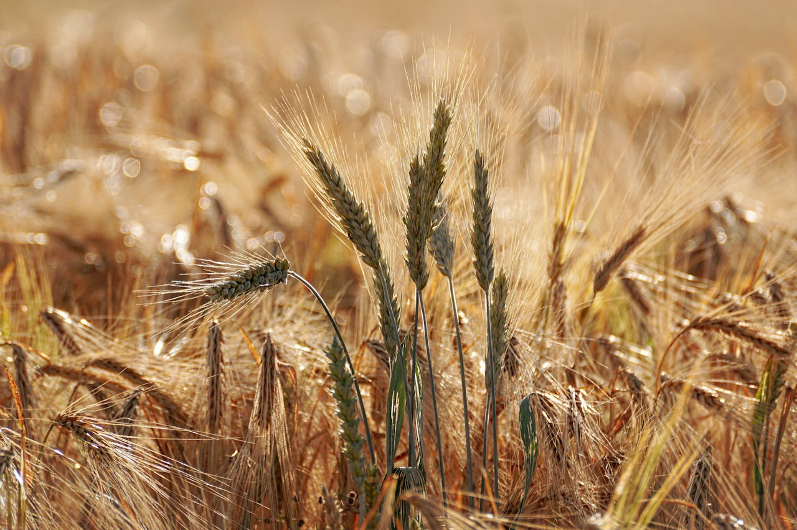
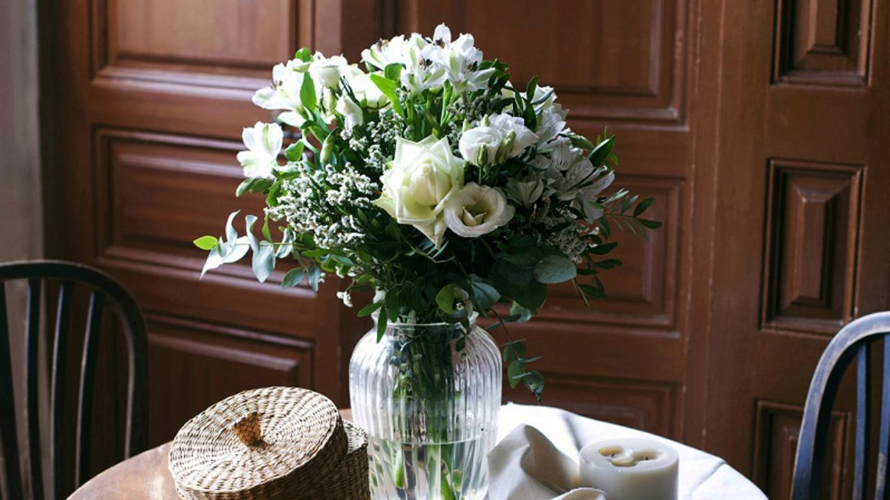

¿Urbano o rural?
La vida en el campo es mucho más relajada y menos estresante que en la ciudad, el aire es más puro y la calidad de vida mejora considerablemente. Los beneficios de vivir en el campo van más allá del hecho de escapar de la contaminación, las prisas y el ruido.
Vivir en el campo te permite estar en contacto constante con la naturaleza. Los amantes de la belleza natural encuentran en los campos y bosques un refugio perfecto. Puedes despertar cada mañana con el canto de los pájaros y disfrutar de impresionantes paisajes.
¿Qué sembraria?
En la region de donde soy es muy común la siembra de maiz pero ultimamente se ha implementado tambien la siembra de trigo.El cultivo de trigo en México es de gran importancia y tiene diversas implicaciones en el ámbito económico, social y alimentario.
Es importante destacar que el cultivo de trigo en México también enfrenta desafíos, como la variabilidad climática, los cambios en los precios internacionales y la competencia de otros países productores.No obstante, su desarrollo estratégico contribuye a fortalecer la seguridad alimentaria, el desarrollo rural y la economía nacional.
El trigo ocupa el primer lugar aportando el 16% de proteína mundial total, incluyendo todos los productos agropecuarios y el pescado. El contenido de proteínas está influido por la variedad del trigo, así como las condiciones ambientales y de manejo (temperatura, método de cultivo, tipo de suelo y disponibilidad de nitrógeno), el valor nutritivo de las proteínas está determinado
Con muchas flores en la casa
 Las flores en la casa son esenciales, no pueden faltar y realmente se tienen varios beneficios tenerlas en casa.
Las flores en la casa son esenciales, no pueden faltar y realmente se tienen varios beneficios tenerlas en casa.
Las flores limpian el aire. En el momento en el que hacen la fotosíntesis, absorben el dióxido de carbono y lo transforman en oxígeno. Ese pequeño gesto tan necesario para las plantas y las flores, convierte a tu casa en un espacio de aire limpio, limpio. Ahora sí, inspira, espira.
Hay algo muy evidente que puede que no lo veas a simple vista pero que a golpe de nariz sabes de lo que te hablamos: su olor. Cada vez que llegas a casa, su aroma te da la bienvenida y es inevitable no sonreír y cerrar los ojos por un momento. Las flores frescas aromatizan habitaciones y casas enteras. Una vez te acostumbres a ese olor, no sabrás estar sin un ramo en casa. Las peonías o las rosas enamoran y aromatizan todos los espacios de una forma única.
¡Todo está relacionado! Y es que las flores frescas valen oro. Pueden hacer casi más terapia que una noche de viernes con amigas y un buen vino. Cada vez que las huelas y las veas, harán que tu estado de ánimo mejore. ¿Los culpables? Su color y el olor que desprenden.
Si la pereza se ha apoderado de ti y no puedes ni levantarte de la cama, recuerda el ramo que llevaste hace dos días al trabajo. Ese que hace que tu productividad no decaiga. No lo decimos nosotros, hay estudios que demuestran que tener flores en el trabajo hace que la productividad aumente. Las flores se convierten en las compañeras que te alegran los días en el trabajo. Son ese compañero que no quieres que se vaya nunca de vacaciones.
Casa con convinaciones moradas
Ademas de ser uno de mis colores favoritos, quiero que la casa de mis sueños sea con convinaciones o detalles morados.
El morado es un tono que tiene distintos significados en la decoración. Por un lado, este simboliza asociado a la nobleza, el lujo y la realeza; mientras que por otro, este representa la magia, la espiritualidad y la creatividad. Asimismo, el morado es relacionado con el feminismo
Por ello, este color es ideal para generar la sensación de elegancia y sofisticación, sobre todo en espacios como la habitación o la sala, además del estudio y la cocina.
Ideas de casas en el campo en Pinterest
En las últimas décadas, muchas casas de campo han sido renovadas, transformando lo que alguna vez fue una residencia de trabajo en un hogar moderno que mantiene el encanto rústico. Los proyectos de restauración a menudo respetan los materiales originales y las características arquitectónicas, pero incorporan comodidades modernas, como calefacción central, aire acondicionado, sistemas de seguridad avanzados y cocinas equipadas con electrodomésticos de última generación. Tengo la idea de como sería mi casa en el campo, pero quiero compartir alginas ideas que encontré en Pinterest  Confio en que mi sueño de tener una casa bonita pueda realizarse con la satisfaccion de mi trabajo y esfuerzo y adecuarla a mis gustos para mi familia
Confio en que mi sueño de tener una casa bonita pueda realizarse con la satisfaccion de mi trabajo y esfuerzo y adecuarla a mis gustos para mi familia
Imagenes con filtro
